Courses › Movement Science › Module 1
Movement Science · 6221
Module 1 — ICF, Movement System, Motor & Postural Control
Topics: ICF Model • The Movement System • Motor Control Theory • Sitting & Standing Postural Control
📖 How to Use These Notes
- Best used with the lecture playing — keep these open, follow along, and add your own notes as you watch
- Lecture banners mark the start of each topic and run in the same order as the videos
- 🎙 Callouts = direct insights from the instructor's transcript
- ★ Tips = exam-relevant content or things the instructor told you to prepare
- Figures are taken directly from the module's slide decks
- Each topic ends with its own Quick-Reference Glossary
- Written from last year's recordings — if a lecture has been re-recorded or resequenced, Canvas wins
- Companion assignment: ICF e-learning chapters 1–4
TOPIC 1.1
The WHO ICF Model
1. What the ICF Is
- The WHO's classification of the health components of functioning and disability — the frame for holistic, patient-centered practice.
- An enablement model (vs the Nagi disablement model): look beyond the health condition to what enables function, activity, and participation.
- It creates a common language among stakeholders: the patient first, then physicians, nurses, case managers, OTs, SLPs, insurers, caregivers, community.
- For the PT it is a clinical-reasoning tool — the 30,000-foot view: organize exam findings into components, identify barriers and facilitators, prioritize, and reflect.
2. The Model
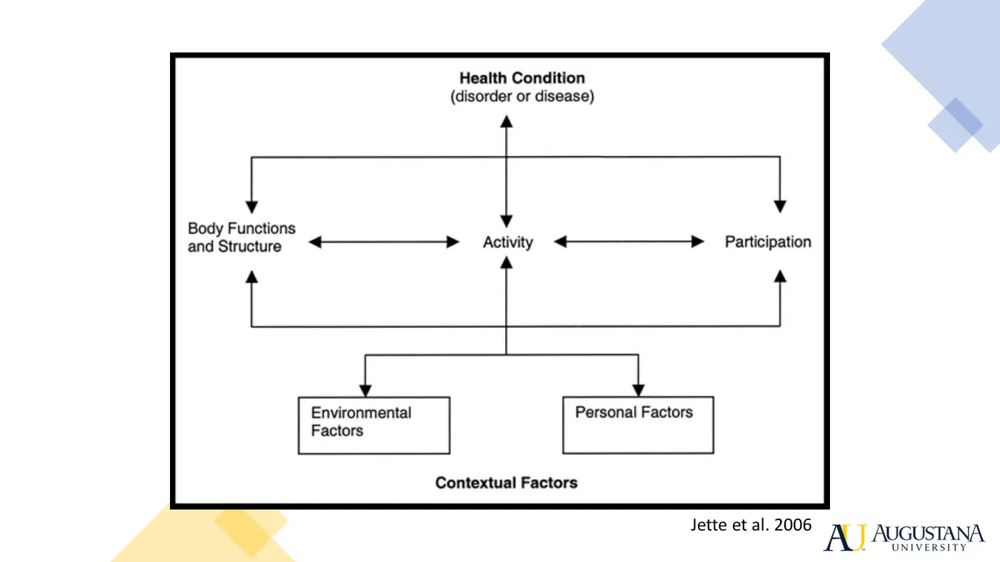
- Function ↔ disability is a continuum. Function (body functions/structures, activities, participation) emerges from interactions between the health condition and the contextual factors (environmental + personal).
| Component | What goes there |
|---|---|
| Health condition | Disease, disorder, injury, trauma. Comorbidities → personal factors |
| Body structure & function | Anatomic/physiologic changes: mental, sensory, voice/speech, and body-system functions (CV, neuro, MSK, integumentary...) |
| Activities & participation | Nine domains: learning & applying knowledge · general tasks & demands · communication · mobility · self-care · domestic life · interpersonal interactions & relationships · major life areas · community, social & civic life |
| Environmental factors | Assistive devices/products/technology, natural & built environment, support & relationships, attitudes, services/systems/policies — facilitators or barriers |
| Personal factors | Demographics (age, gender), social determinants (SES, education), psychosocial (behavior, coping, self-efficacy, fear) |
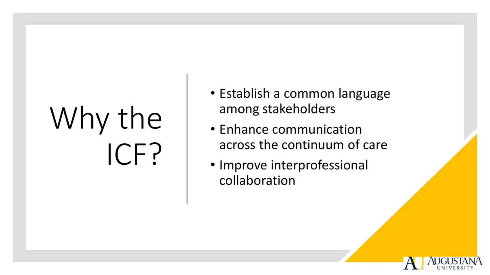
- Know the traditional diagram cold; appreciate the newer embedded-relationships version. The classic figure marks personal factors' positive/negative aspects "not applicable," but other resources treat them as both — variation between sources is OK.
3. Case — Bonnie, 90
Organize Bonnie into the model
- Health condition: diabetic neuropathy (primary); frequent falls from imbalance; recent hospitalization, no fractures.
- Body structure & function: impaired light touch and proprioception (watches her feet), postural instability, inferred LE weakness (sit↔stand), impaired aerobic capacity (COPD), hunched walking posture, age-related length-tension changes.
- Activities: sit-to-stand and stand-to-sit, walking, balance, overhead reach (posterior balance loss), likely bed mobility, showering/dressing → the OT is your interprofessional partner.
- Participation: roles as friend, grandmother, domestic caretaker restricted — the family visits are what she misses most.
- Environmental: cane (forgets at home, furniture-walks), first-floor apartment, help with cooking/shopping/cleaning, O2 tank, medications — but she lives alone (barrier).
- Personal: vibrant; anxiety and fear of falling; comorbidities COPD, osteopenia.
▶ Explore — Topic 1.1 (lecture video: see your Canvas module)
- ICF e-Learning Tool — assigned chapters 1–4
- Atkinson & Nixon-Cave: a tool for clinical reasoning with the ICF (PubMed)
ICF — Quick-Reference Glossary
| Term | Definition |
|---|---|
| ICF | WHO International Classification of Functioning, Disability, and Health |
| Enablement vs disablement | ICF looks at what enables function; Nagi framed patients by disability |
| Health condition | Disease, disorder, injury, or trauma at the top of the model |
| Body structure & function | Anatomic and physiologic status; aligns with the movement system |
| Activities / Participation | Task execution / involvement in life roles — nine domains |
| Capacity / Performance | Best function in a standardized environment / actual function in one's own context |
| Environmental factors | External facilitators and barriers, devices to policies |
| Personal factors | Demographics, social determinants, psychosocial traits; comorbidities live here |
TOPIC 1.2
The Movement System
1. Definition and Identity
- The movement system: the anatomic structures and physiologic functions of six body systems — cardiovascular, pulmonary, endocrine, integumentary, nervous, musculoskeletal — interacting to move the body or its parts.
- 2019 APTA House of Delegates: "The integration of body systems that generate and maintain movement at all levels of bodily function."
- Movement is goal-directed and context-specific — it emerges from the individual, task, and environment (dynamic-systems underpinning).
- Effectors: nervous + musculoskeletal. Bioenergetics: pulmonary, cardiovascular, endocrine. Encasement: integumentary. Any failing system can degrade movement; redundancy allows compensation.
2. What Makes a Movement System Practitioner
- Integrative knowledge of the system and its parts; ability to evaluate and diagnose movement dysfunction (observation and instruments); identify impairments across body systems; design interventions for the impairments and the dysfunction; and re-evaluate to progress/regress the plan of care (per the Saladin & Voight article; see links below).
- APTA 2015 white paper: PTs bring a unique perspective on purposeful, precise, efficient movement across the lifespan; examine/evaluate including diagnosis and prognosis; maximize engagement with the environment through movement-related intervention.
3. Movement System Diagnosis
- PTs do not medically diagnose. PT diagnoses describe disorders of movement — system-specific, tissue-specific, or syndromes — in movement-related terms, spanning populations and the lifespan; succinct and direct, naming pathology and recovery stage where possible.
- Example: basal ganglia damage (infarct, Parkinson's dopamine disruption) → hypokinesia (small-amplitude movement) → unsafe strategies and fall risk → intervention: amplitude-focused cueing.
- This course won't culminate in movement-system diagnoses, but movement language — reduced alignment, aberrant movement, decreased amplitude — anchors your clinical reasoning from here on.
▶ Watch & explore — Topic 1.2 (lecture video: see your Canvas module)
- Dr. Sahrmann: What Is the Movement System? (3:34)
- Dr. Sahrmann: The Movement System and Your Patient (2:58)
- Movement System: #APTACSM 2016 Dispatch (4:09)
- Physiopedia: The Movement System
- Voight & Hoogenboom: What is the Movement System and Why is it Important? (PubMed)
- Saladin & Voight: Introduction to the Movement System as the Foundation (PubMed)
- Hoogenboom: The Movement System and PT Practice (PubMed)
- Hoogenboom & Sulavik: The Movement System in Education (PubMed)
Movement System — Quick-Reference Glossary
| Term | Definition |
|---|---|
| Movement system | Six body systems integrated to generate and maintain movement |
| Effector systems | Nervous + musculoskeletal — produce the movement |
| Bioenergetic systems | Pulmonary, cardiovascular, endocrine — fuel the movement |
| Movement system diagnosis | A movement-dysfunction label in movement terms, not a medical diagnosis |
| Hypokinesia | Small-amplitude movement, classic with basal ganglia pathology |
| APTA vision | Transforming society by optimizing movement to improve the human experience |
TOPIC 1.3
Motor Control Theory and Application
1. Foundations
- Motor control = the ability to regulate or direct mechanisms essential to movement.
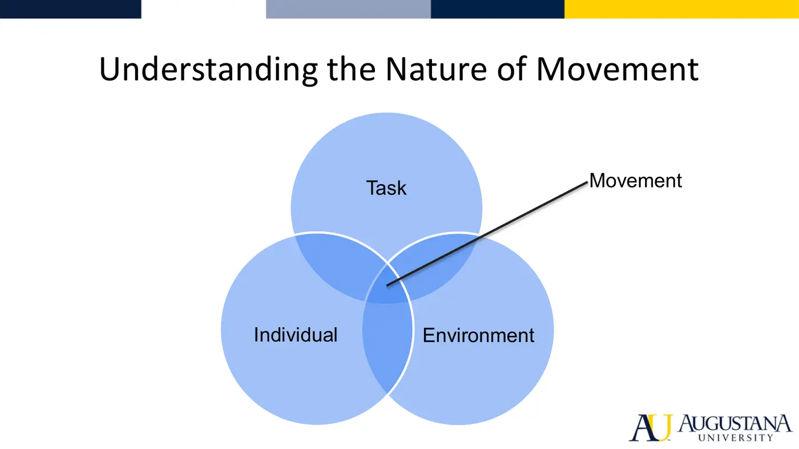
- The 10-year-old vs the 80-year-old in an empty vs crowded, wet, obstacle-filled hallway: the same task changes completely with the environment and the individual. Never analyze one in isolation.
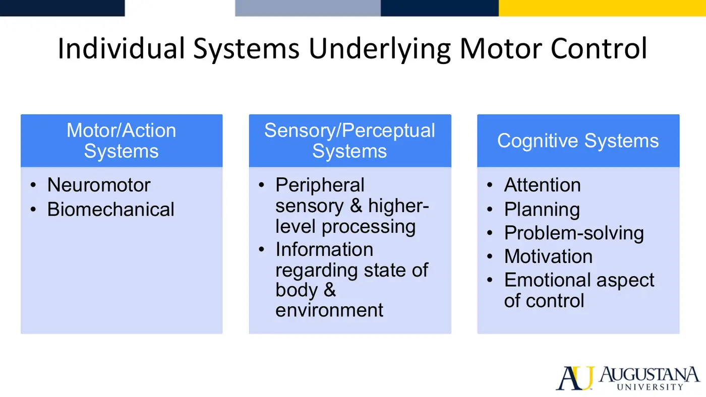
- Motor/action systems — muscles, joints, neuromuscular and biomechanical coordination; multiple strategies exist for any task. Sensory/perceptual systems — perception = integrating sensation into meaning; body state (proprioception, kinesthesia) + environmental features (the airport moving-walkway adjustment). Cognitive systems — attention, planning, problem solving, motivation, emotion.
2. Task and Environment Classification
| Dimension | One pole | Other pole |
|---|---|---|
| Timing | Discrete — clear start/end (kick, sit-to-stand) | Continuous — ends when performer chooses (walk, run, swim) |
| Environment | Closed — fixed, predictable (empty hallway) | Open — changing, unpredictable (soccer) |
| Base of support | Stability — BOS doesn't move (sit, stand) | Mobility — BOS moves (walk, transfer) |
| Upper extremity | Manipulation — UE involved (holding a baby) | Non-manipulation — UE not required |
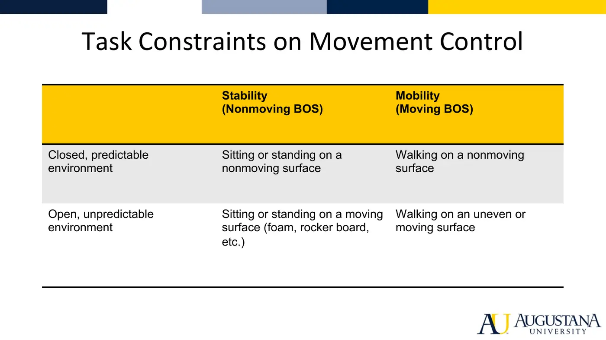
- Regulatory environmental features shape the movement itself (cup size/shape/fullness; stair height; wet surface). Non-regulatory features affect performance without changing movement form (noise, distraction).
3. Theories of Motor Control
- Theories are frameworks for interpreting behavior and guides for clinical action — dynamic, testable, evolving with the science.
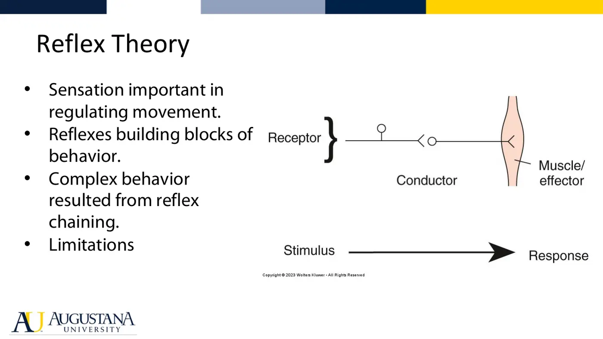
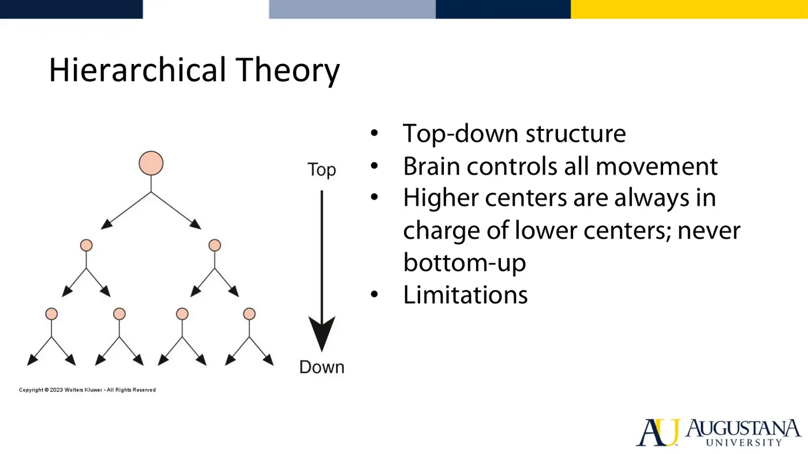
| Theory | Core idea | Key limitations |
|---|---|---|
| Reflex (Sherrington, early 1900s) | Reflexes chained together build complex behavior | No voluntary/spontaneous movement, no movement without sensory input, too slow for fast sequences, can't explain reflex override or novel movement |
| Hierarchical (1920s–40s) | Top-down only; brain issues one command producing normal synergies | Can't explain normal bottom-up reflexes (stepping on a tack) |
| Motor programming (1960s–80s) | Hardwired central patterns triggered top-down or bottom-up; sensation modulates | Same command ≠ same movement — gravity, limb position, fatigue; ignores MSK/environmental variables |
| Ecological | Perception actively guides action; explore the environment for action-relevant information | Underweights nervous-system organization |
| Systems / dynamic systems (current) | Distributed control: many centers collaborate; internal (stiffness, inertia) + external (gravity) factors; variability and flexibility adapt movement to task and environment | The working theory of this course |
- ▶ Watch the Topic 1.3 lecture video in your own Canvas module — video links are cohort-specific.
Motor Control — Quick-Reference Glossary
| Term | Definition |
|---|---|
| Motor control | Ability to regulate or direct mechanisms essential to movement |
| Individual–task–environment | The interaction from which movement emerges |
| Perception | Integration of sensory information into something meaningful |
| Discrete / Continuous | Clear start-end vs performer-chosen end |
| Closed / Open | Predictable vs unpredictable environment |
| Stability / Mobility | Fixed vs moving base of support |
| Regulatory features | Environmental features the movement must conform to |
| Normal synergy | Hierarchical theory's centrally commanded muscle linkage |
| Motor program | Hardwired central pattern activated top-down or bottom-up |
| Systems/dynamic theory | Distributed, collaborative control — today's working theory |
| Task-oriented approach | Function-first intervention model built on systems theory |
TOPIC 1.4
Sitting and Standing Postural Control
1. Key Terms
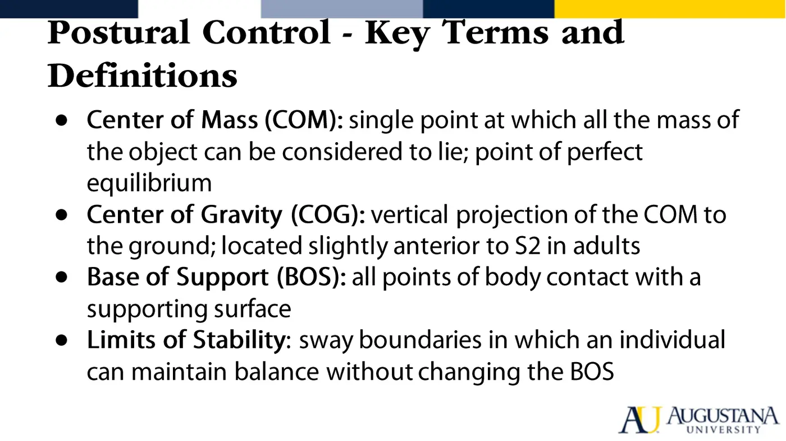
- Postural control = controlling the body's position in space for stability and orientation. Orientation = appropriate segment-to-segment and body-to-environment relationships for the task; stability = controlling the COM relative to the BOS.
- COM — the equilibrium point of total body mass; its vertical projection = COG, in adults slightly anterior to S2. BOS — the contact area with the support surface. Limits of stability — sway boundaries without changing the BOS; larger in sitting than standing.
- Tasks weight the two purposes differently: a goalkeeper sacrifices stability for orientation; a tightrope walker protects stability at all costs.
2. What Balance Emerges From
- Individual × task × environment. Individual systems: musculoskeletal (ROM, strength, spinal flexibility, biomechanics), neural (motor, sensory, higher-level cognitive processing), cardiovascular (brain perfusion — orthostatic hypotension).
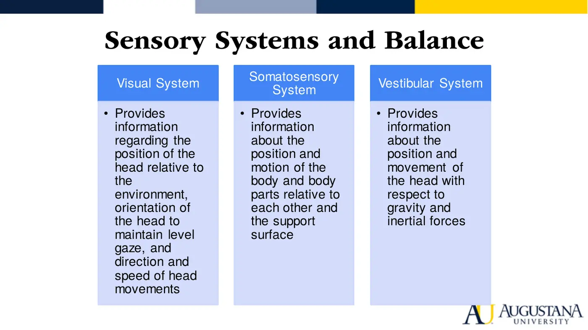
- Visual — head position/motion vs surroundings; verticality references (door frames, lampposts). Somatosensory — muscle spindles, GTOs, joint and skin receptors; body vs support surface. Vestibular — head vs gravity/inertia; semicircular canals detect angular/fast motion, otoliths linear/slow motion and head position.
3. Three Types of Balance Control
| Type | Definition | Mechanism |
|---|---|---|
| Steady-state | Control COM over BOS in predictable, unchanging conditions (quiet sit/stand, constant-speed walking) | Ongoing tonic control |
| Reactive | Recover stability after an UNEXPECTED perturbation (trip, bump) | Feedback |
| Proactive / anticipatory | Pre-activate legs/trunk before a destabilizing voluntary movement (heavy lift, curb step) | Feedforward |
- Environment and cognition matter: open vs closed surroundings, lighting, floor hazards; firm/soft and stable/unstable surfaces; narrow/wide BOS; attention, processing speed, executive function, plus depression, anxiety, fear. Even quiet standing costs cognition.
4. Sitting
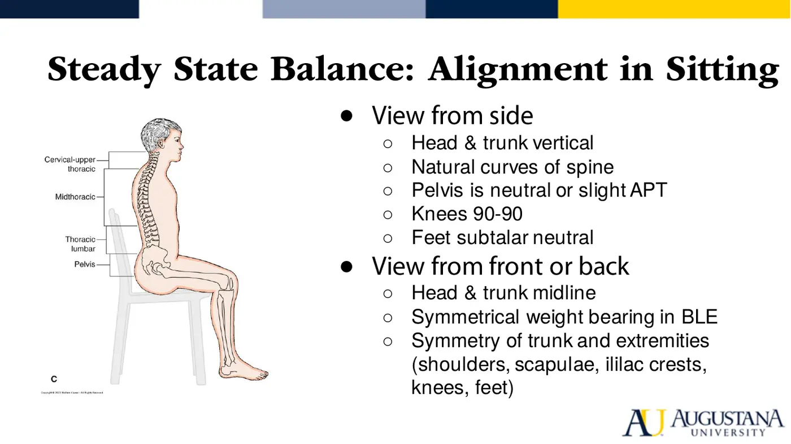
- Moderately high COM, moderate BOS (buttocks, thighs, feet). The pelvis is the foundation — neutral or slight anterior tilt; equal weight through both ischial tuberosities; knees 90/90, feet subtalar neutral; natural curves; head vertical, midline, chin tucked; symmetry front-to-back.
- Reactive sitting strategies: backward sway → hip flexors, abdominals, neck flexors. Forward sway → hip extensors, back and neck extensors. Feet on the floor: tib anterior recruits in forward reach; gastroc brakes the forward movement.
5. Standing
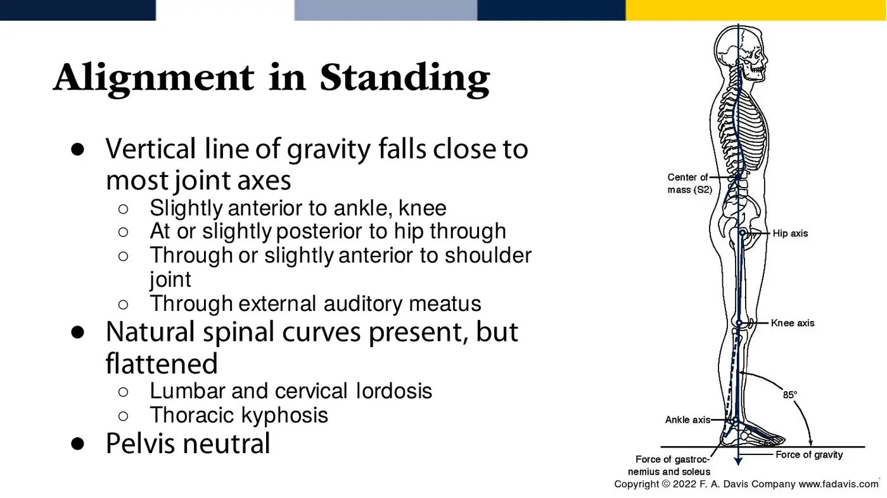
- High COM, small BOS, equal weight both feet. Plumb line: slightly anterior to lateral malleolus and knee axis → through the greater trochanter (slightly posterior to hip axis) → lumbar/cervical vertebral bodies → shoulder joint → earlobe. Natural curves, neutral pelvis.
- Ideal alignment keeps equilibrium with the least internal energy — minimal active contraction, tonic muscle activity only.
6. Four Strategies to Recover Standing Stability
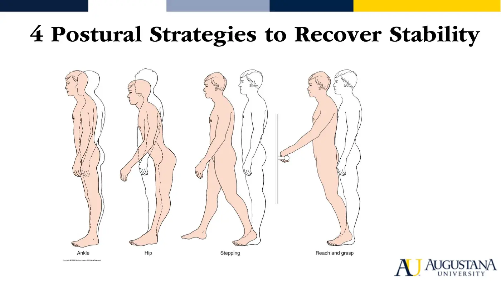
| Strategy | When | Muscle sequence |
|---|---|---|
| Ankle | Quiet stance, small perturbations, sway within LOS | Distal → proximal. Backward sway: tib anterior → quads → abdominals. Forward sway: gastroc → hamstrings → paraspinals |
| Hip | Larger/faster perturbations; compliant or narrow surface (balance beam) | Proximal → distal. Backward sway: paraspinals → hamstrings. Forward sway: abdominals → quads |
| Stepping | Large, fast perturbations | Step or hop toward the displacing force — realigns the BOS under the falling COM |
| Reach-and-grasp | Large, fast perturbations | Extend the BOS by grasping a solid surface |
- Healthy young adults switch between strategies quickly as task and environment change — that flexibility is itself a marker of healthy postural control.
- ▶ Watch the Topic 1.4 lecture video in your own Canvas module — video links are cohort-specific.
Postural Control — Quick-Reference Glossary
| Term | Definition |
|---|---|
| Postural orientation / stability | Segment-environment relationships for the task / COM control over the BOS |
| COM / COG | Center of total body mass / its vertical projection (adults: slightly anterior to S2) |
| BOS | Body area in contact with the support surface |
| Limits of stability | Sway boundaries without changing the BOS; sitting > standing |
| Steady-state / Reactive / Proactive balance | Predictable conditions / recovery after perturbation (feedback) / pre-activation before movement (feedforward) |
| Semicircular canals / Otoliths | Angular-fast vs linear-slow head motion detectors |
| Ankle strategy | Small sway; distal-to-proximal recruitment |
| Hip strategy | Fast/large sway or narrow surface; proximal-to-distal recruitment |
| Change-of-support strategies | Stepping and reach-and-grasp — moving the BOS itself |
| Plumb line | Reference line of gravity for standing alignment |
MODULE 1
Sync Session 1
- Sync applies the ICF, the movement system, motor-control theories, and the task-classification grid to cases (deck in course files).